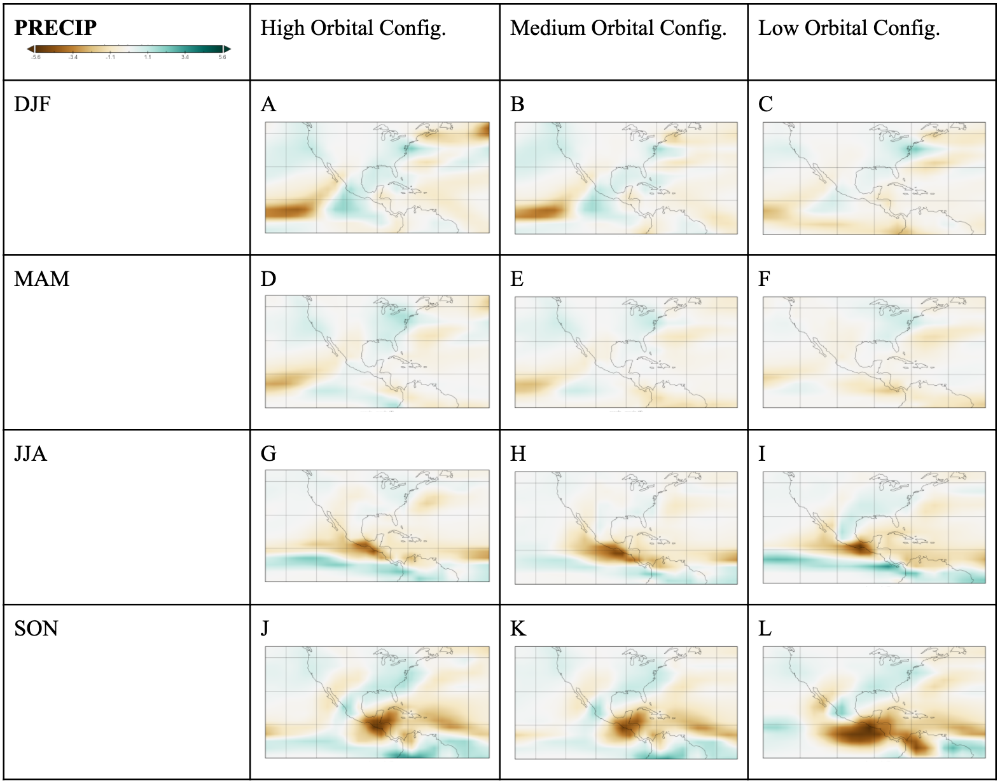
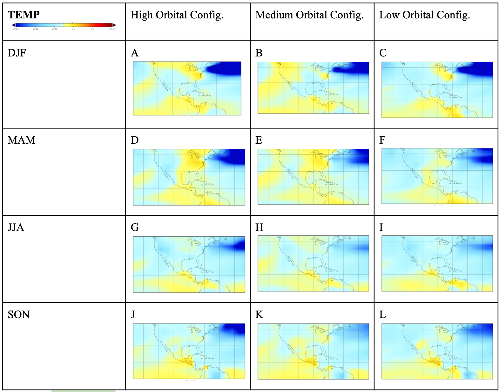
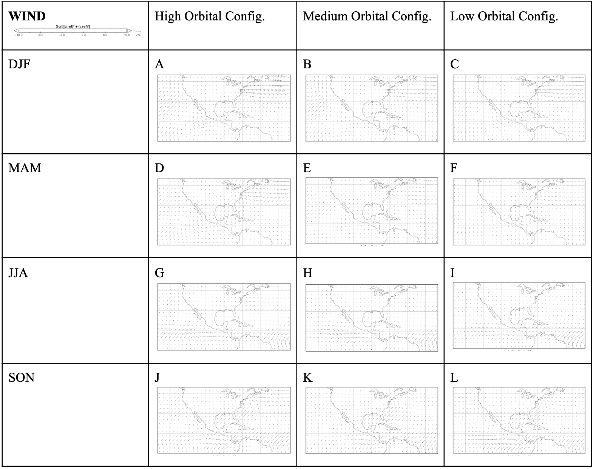
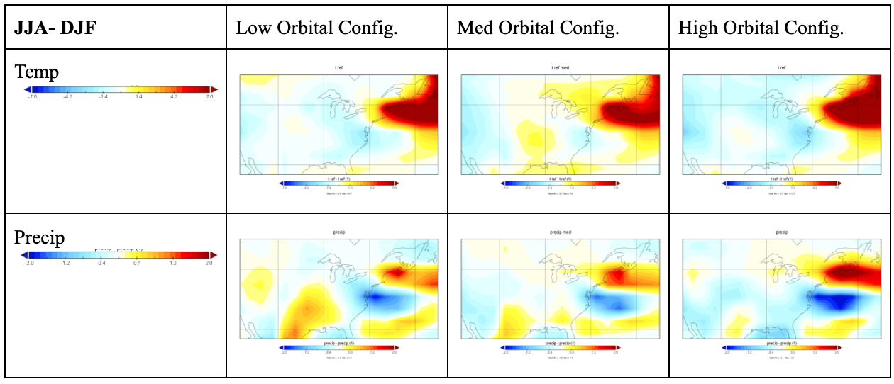

Visulizing the Seasonality of the Younger Dryas
Ashley Cofrin. Spring, 2021

In the following visualizations, I use climate model data to analyze the seasonality of the Younger Dryas Period in Eastern North America. The full document is attached here that has more detail about background, methodology, and results.
Abstract
The Younger Dryas was a brief and abrupt climate event associated with a sudden cooling and drying in regions throughout the Northern Hemisphere; likely initiated by a weakening of the Atlantic meridional overturning circulation (AMOC). I analyze the effects of AMOC weakening and insolation seasonality on climate patterns in eastern North America using simulations of an Earth System Model. In addition to a forced weakening of the AMOC through a freshwater forcing in the North Atlantic, these simulations also include three experiments with obliquity and precession orbital parameters varied to minimize and maximize Northern Hemispheric insolation seasonality. While most of the hemisphere underwent cooling, eastern North America shows some signs of warming and increased precipitation following hosing. As Northern Hemisphere insolation seasonality is forced to increase temperature and precipitation seasonality decrease following hosing. Reduced temperature seasonality in eastern North America is a result of positive temperature anomalies in winter and a common cooling in summer across all orbital configuration experiments. Precipitation seasonality is reduced in all experiments from a common year-round wetting after hosing. These climate responses suggest that a weakening of the AMOC can ameliorate climate seasonality in some regions.
Precipitation
The change in precipitation across orbital configurations simulates year round wetting in ENA; the pattern of drying and wetting is specific to each season, while orbital configurations modify the magnitude of the patterns. In the ENA, orbitally induced variation is greatest in winter with a 2.5 mm/day increase in the low configuration; the high and low orbital configuration experiments are similar, while medium shows a smallest wetting. A common, isolated, but large wetting is present in the NEUS across all orbital configurations, especially in the low and high experiments. Spring also has consistent wetting but the magnitude is lower while the spatial extends as far west as Michigan and as far south as the east coast. All orbital configurations simulate a common lack of change in precipitation during the summer, perhaps a result of common atmospheric mechanisms.
Temperature
The coherent change in precipitation across orbital configurations contrasts temperature changes, where winter and spring simulate variable positive temperature anomalies in response to varied orbital configuration, while summer and fall exhibit little to no change. Orbitally induced variation is greatest in winter with a 5 K difference among the experiments in the northeastern United States (NEUS), but little variability elsewhere in Eastern North America. The high configuration simulates the greatest positive temperature anomaly in the NEUS, while medium the least. Simulated spring temperature exhibits the greatest spatial variation, with positive temperature anomalies in most of ENA in the high and medium configurations. These positive temperature anomalies are greatly reduced under the low configuration; instead negative temperature anomalies are simulated in Florida and regions adjacent to the Gulf of Mexico. Across all orbital configurations and seasons, the greatest positive temperature anomalies are consistently in the NEUS, and likely attributed to anomalous heat transport from lower latitudes as demonstrated by anomalous transport by surface winds, along with direct radiative forcing from insolation. Notably, simulated summer temperatures demonstrate a common negative temperature anomaly across ENA of similar magnitude in each orbital configuration.
Wind
Surface wind anomalies suggest that the subtropical jet may also be responsible for drawing heat into ENA, particularly in spring and winter when the modern jets are the strongest (Bjerknes, 1964) and anomalous southerly transport is the greatest in the simulations (McGee et al., 2018). The modern climatology of ENA identifies midlatitude jet stream strength, configuration, and position as a mechanism for controlling southerly transport into ENA and supports this analysis (Deser, et al., 1993). A seasonal weakening of the Northern Hemispheric jets during the summer may reduce this heat transport equally across each experiment. Reduced heat transport and a common negative radiative forcing in the North Hemisphere from an AMOC shutdown (Gailbraith et al., 2016) may then produce the consistent simulated summer cooling exhibited across all experiments.
Seasonality Amelioration Facilitated by AMOC Weakening
Despite increasing insolation seasonality, positive temperature anomalies during winter and negative temperature anomalies during summer indicate that temperature seasonality is reduced in eastern North America. This pattern is particularly strong in the northeastern United States where the summer-winter temperature difference decreases by as much as 4 K under the high configuration but only decreases by 3 K under the low configuration. Notably, this decrease in temperature seasonality in response to increased insolation seasonality does not vary linearly. The medium configuration includes a forced insolation seasonality of ~250 Wm-2, and regions of eastern North America such as the Great Lakes region and Florida simulate increased temperature seasonality following hosing. This suggests that a shutdown of the AMOC ameliorates the forced increase in insolation seasonality, likely through regional changes in atmospheric circulation.
Acknowledgements
I would like to thank Professor Jack Williams and David Fastovich for their continuous support, encouragement, insights, and ideas in the development of this work. I would also like to thank the entire Williams Lab for their constant positivity and help.